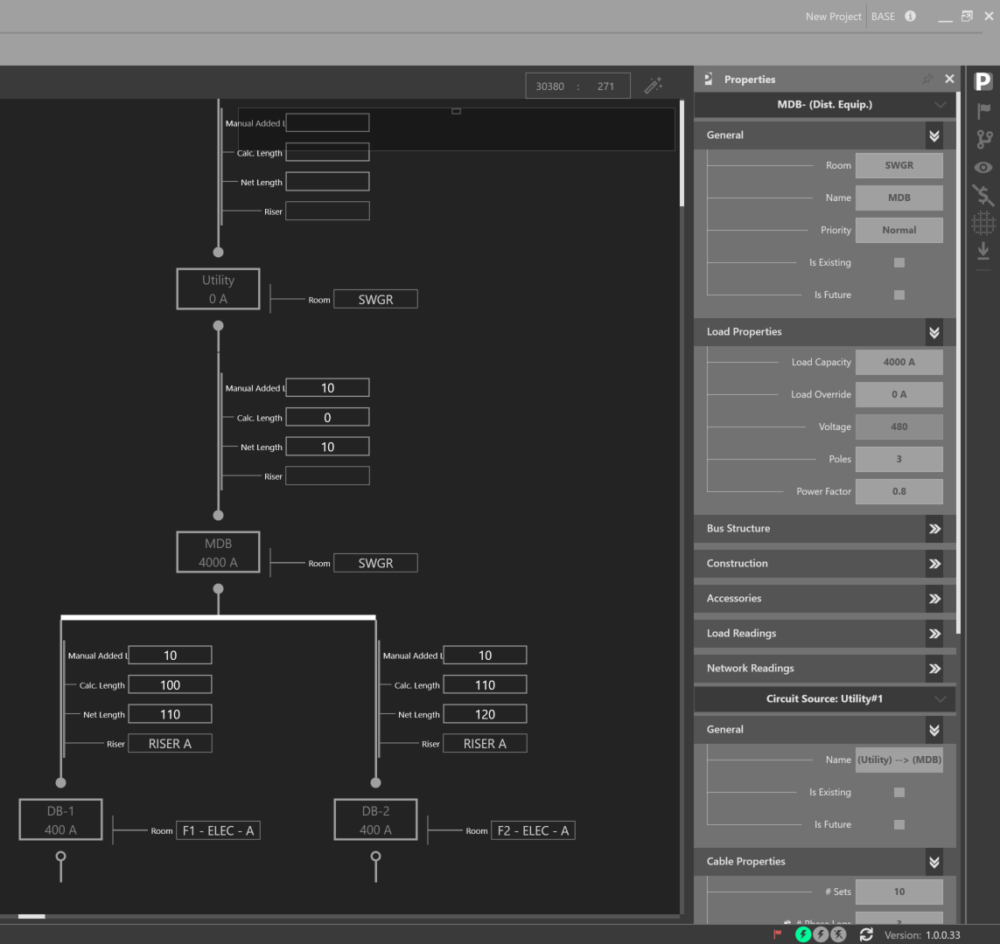
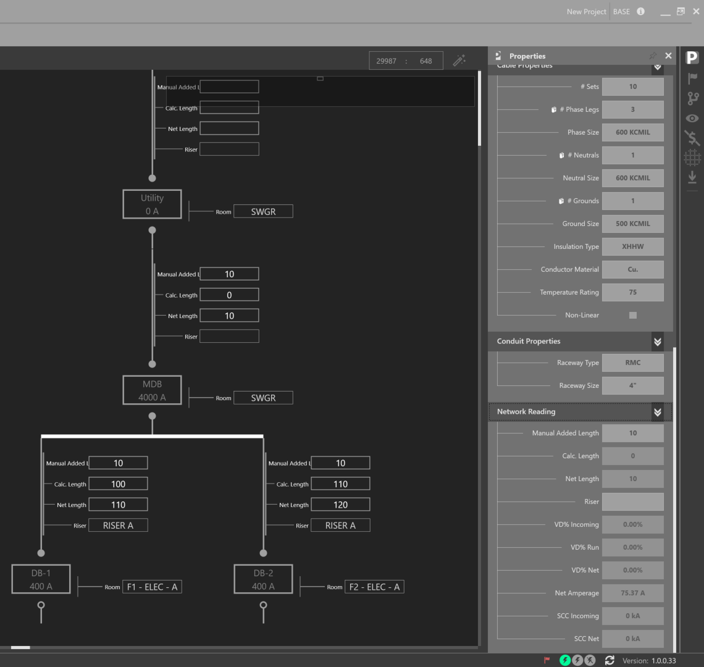

Properties Explorer¶
The Properties Explorer displays the various properties associated with the current selection.
The Properties Explorer displays the various properties associated with the current selection.

The Properties Explorer displays the various properties associated with the current selection.
For more property definitions and information, see below:
| GENERAL PROPERTIES | ||
| PROPERTY NAME | PROPERTY TYPE | DESCRIPTION |
| Name | Equip. General Properties | Equipment Name |
| Room | Equip. General Properties | Equipment location |
| Priority | Equip. General Properties | Equipment Priority is assigned here (Normal, EO1, EO2, Life Safety) |
| Is Existing | Equip. General Properties | Equipment is existing |
| Is Future | Equip. General Properties | Equipment is intended for future installation |
| Load Capacity | Load Properties | For a Utility, Load Capacity is irrelevant |
| Load Override | Load Properties | Intended to override load calculations |
| Voltage | Load Properties | Voltage is a read only property in most situations. It is set at the source of power, i.e. utility, generator, or transformer. Current available voltages: 13.8kV, 13.2kV, 5400V, 4160V, 480V, 460V, 277V, 208V, 120V |
| Poles | Load Properties | Available Poles: 1,2,3,6,9 |
| Power Factor | Load Properties | |
| Custom Diversity Class | Load Readings | |
| Diversity Position | Load Readings | |
| CONT. LOAD Connected Load | Load Readings | CONTINUOUS LOAD. ALL LOAD READINGS RETURNED IN KVA |
| DIVERS. RECPT. LOAD Code Demand Load | Load Readings | DIVERSIFIED RECEPTACLE LOAD |
| Diversified Resi. Load | Load Readings | Diversified Residential Load |
| % Design Spare Capacity | Load Readings | Supplemental design factor based on Connected Load |
| Net Design Spare Capacity | Load Readings | Summation of downstream % Design Spare Capacity |
| Net Load | Load Readings | Sum of Continuous Load, Diversified Receptacle Load, Diversified Residential Load, and Design Spare Capacity |
| Max Capacity | Load Readings | kVA value of Load Capacity |
| % Loaded | Load Readings | Connected Load / Load Capacity |
| VD% Incoming | Network Readings | Volts Dropped Percentage at the loadside of upstream equipment |
| VD% Net | Network Readings | Total volts dropped percentage at the current node of the distribution system |
| SCC Incoming | Network Readings | Available short circuit current at the upstream node |
| SCC Net | Network Readings | Total short circuit current at the current node of the distribution system |
| CIRCUIT PROPERTIES | ||
| PROPERTY NAME | PROPERTY TYPE | DESCRIPTION |
| # Sets | Cable Properties | Quantity of sets |
| # Phase Legs | Cable Properties | Phase legs, default is 3 for 3-phase loads |
| Phase Size | Cable Properties | Phase size |
| # Neutrals | Cable Properties | Quantity of neutral conductors |
| Neutral Size | Cable Properties | Neutral Size |
| # Grounds | Cable Properties | Quantity of Ground Conductors |
| Ground Size | Cable Properties | Ground Size |
| Insulation Type | Cable Properties | Insulation Type - Current Available Types: THHN, XHHW, RHH |
| Conductor Material | Cable Properties | Conductor Type - Current Available Types: CU. AL. |
| Temperature Rating | Cable Properties | Temperature Threshold - Current Available Temperatures: 60, 75, 90 Degrees Celsius |
| Is Non-Linear | Cable Properties | Non-linear loads cause the neutral conductor to carry current, which introduces notchs and ringing effects which cause distortions in the sinusoidal waveform |
| Raceway Type | Conduit Properties | Raceway Type - Current Available Types: EMT, RMC, PVC (SC. 40), PVC (SC. 80), LFMC |
| Raceway Size | Conduit Properties | Raceway Size |
| NETWORK PROPERTIES | ||
| PROPERTY NAME | PROPERTY TYPE | DESCRIPTION |
| Riser | Network Properties | Riser as defined in Architectural Elements |
| Manual Added Length | Network Properties | Supplemental length to Calculated Length. The default value can be modified in Settings |
| Calc. Length | Network Properties | Calculated distance dependent on room locations defined in Architectural Elements |
| Net Length | Network Properties | Sum of Manual Added Length and Calculated Length |
| VD% Incoming | Network Properties | Volts dropped percentage at the loadside of upstream equipment |
| VD% Run | Network Properties | Volts dropped percentage across selected run |
| VD% Net | Network Properties | Total volts dropped percentage at the current nde of the distribution system |
| Net Amperage | Network Properties | Current draw of the entire downstream network from a node |
| SCC Incoming | Network Properties | Amount of available short circuit current at upstream node |
| SCC Net | Network Properties | Amount of available short circuit current at current node |
| UTILITY PROPERTIES | ||
| PROPERTY NAME | PROPERTY TYPE | DESCRIPTION |
| Available SCC (kA) | Source Properties | Available short circuit current from the utility |
| Voltage Distortion | Source Properties | Voltage distortion |
| GENERATOR PROPERTIES | ||
| PROPERTY NAME | PROPERTY TYPE | DESCRIPTION |
| Subtransient Reactance | Source Properties | Subtransient Reactance, used to determine the available short circuit current |
| SCC Net | Source Properties | Returns the total short circuit current at the current node of the distribution system |
| DISTRIBUTION BOARD PROPERTIES | ||
| PROPERTY NAME | PROPERTY TYPE | DESCRIPTION |
| MCB | Bus Structure | Main circuit breaker |
| Neutral Bus | Bus Structure | Boolean, Default value: True |
| 200% Neutral Nus | Bus Structure | Boolean |
| Ground Bus | Bus Structure | Boolean, Default value: True |
| Isolated Ground Bus | Bus Structure | Boolean |
| Top Fed | Construction | Boolean |
| Flush Mount | Construction | Boolean |
| Enclosure | Construction | Boolean |
| Volt Meter | Accessories | Boolean, Default value: True |
| SPD | Accessories | Boolean, Default value: True |
| Power Meter | Accessories | Boolean, Default value: True |
| PANELBOARD PROPERTIES | ||
| PROPERTY NAME | PROPERTY TYPE | DESCRIPTION |
| MCB | Bus Structure | Boolean, Default: True |
| Neutral Bus | Bus Structure | Boolean, Default: True |
| 200% Neutral Bus | Bus Structure | Boolean |
| Ground Bus | Bus Structure | Boolean, Default: True |
| Isolated Ground Bus | Bus Structure | Boolean |
| Bolt On Breaker | Bus Structure | Boolean |
| Top Fed | Construction | Boolean, Default: True |
| Flush Mount | Construction | Boolean |
| Enclosure | Construction | Available Types - NEMA 1, NEMA 3, NEMA 3R, NEMA 4, NEMA 4X, NEMA 12. Default value: NEMA 1 |
| Door in Door | Construction | Boolean, Default: True |
| Stainless Steel | Construction | Boolean |
| Feed Through | Construction | Boolean |
| Volt Meter | Accessories | Boolean |
| SPD | Accessories | Boolean |
| Power Meter | Accessories | Boolean |
| Branch Circuit Meter | Accessories | Boolean |
| Split Bus Meter | Accessories | Boolean |
| BUS DUCT PROPERTIES | ||
| PROPERTY NAME | PROPERTY TYPE | DESCRIPTION |
| Room | Equip. General Properties | Represents the point of transition from pipe and wire to bus duct. Bus duct lengths are calculated depeneded on the branch load location. Branch lengths are calculated from the bus duct location to the branch load locations |
| Conductor Type | Bus Structure | Conductor Type - Available Types: Cu, Al. Default Value: Cu |
| Neutral Bus | Bus Structure | Boolean, Default value: True |
| 200% Neutral Bus | Bus Structure | Boolean |
| Ground Bus | Bus Structure | Boolean |
| Isolated Ground Bus | Bus Structure | Boolean |
| Top Fed | Bus Structure | Boolean, Default value: True |
| MECHANICAL PROPERTIES | ||
| PROPERTY NAME | PROPERTY TYPE | DESCRIPTION |
| VFD | Mechanical Properties | Boolean - Variable Frequency Drive |
| Qty Motors | Mechanical Properties | Quantity of Motors |
| MOTOR | Mechanical Properties | Motor Size + Load Unit |
| XFMR PROPERTIES | ||
| PROPERTY NAME | PROPERTY TYPE | DESCRIPTION |
| Primary Winding | Construction | Primary Winding - Available windings: Delta, Wye |
| Secondary Winding | Construction | Secondary Winding - Available windings: Delta, Wye |
| Primary Voltage | Construction | Primary Voltage |
| Secondary Voltage | Construction | Secondary Voltage |
| Overload Rating | Construction | |
| Percent Impedance | Construction | |
| K Rating | Construction | |
| XFMR Type | Construction | Dry Type, Cast Coil Type, VPI, Liquid |
| Temperature Rise | Construction | |
| Grounding Type | Construction | Solid, Low Resistance, High Resistance |
| Insulation Rating | Construction | |
| Primary BIL | Construction | Basic Impulse Level - A method expressing the voltage surge that a transformer will tolerate without breakdown |
| Secondary BIL | Construction | Basic Impulse Level - A method expressing the voltage surge that a transformer will tolerate without breakdown |
| ARCHITECTURAL LOAD PROPERTIES | ||
| PROPERTY NAME | PROPERTY TYPE | DESCRIPTION |
| Room, Floor, Packages, Apartments, Apt. Packages | Allows user to extract entities from the power density model as packages and model them as loads | |
| ATS PROPERTIES | ||
| PROPERTY NAME | PROPERTY TYPE | DESCRIPTION |
| Bypass Isolation | Bus Structure | Boolean |
| Neutral Construction | Bus Structure | Available Types - Solid, Switched, Overlapping |
| Neutral Bus | Bus Structure | Boolean, Default value: True |
| 200% Neutral Bus | Bus Structure | Boolean |
| Ground Bus | Bus Structure | Boolean |
| Isolated Ground Bus | Bus Structure | Boolean |
| Static | Bus Structure | Boolean |